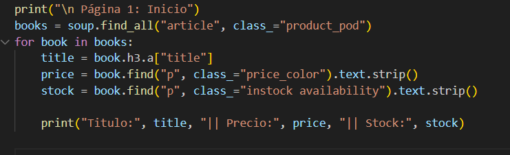

Scraping en Consola
Descripción técnica
Este proyecto utiliza Python y bibliotecas como Request y BeautifulSoup para extraer datos del sitio Books to Scrape.
Utiliza request para realizar solicitudes HTTP y BeautifulSoup para analizar contenido HTML. Recorre todas las páginas del catálogo de forma dinámica hasta no encontrar más libros. La información se imprime en consola.
¿Cómo funciona?
-
Se realiza una petición HTTP a la página principal de libros y su contenido se parsea con BeautifulSoup.

-
Se extraen los títulos, precios y stock de los libros de la primera página.

-
A partir de la segunda página, se construye la URL dinámicamente usando un número de página que se va incrementando.
-
Mediante el bucle while, se extraen los libros como antes. Si no se encuentran libros, se termina el proceso (break).
-
Se imprimen los resultado en consola.